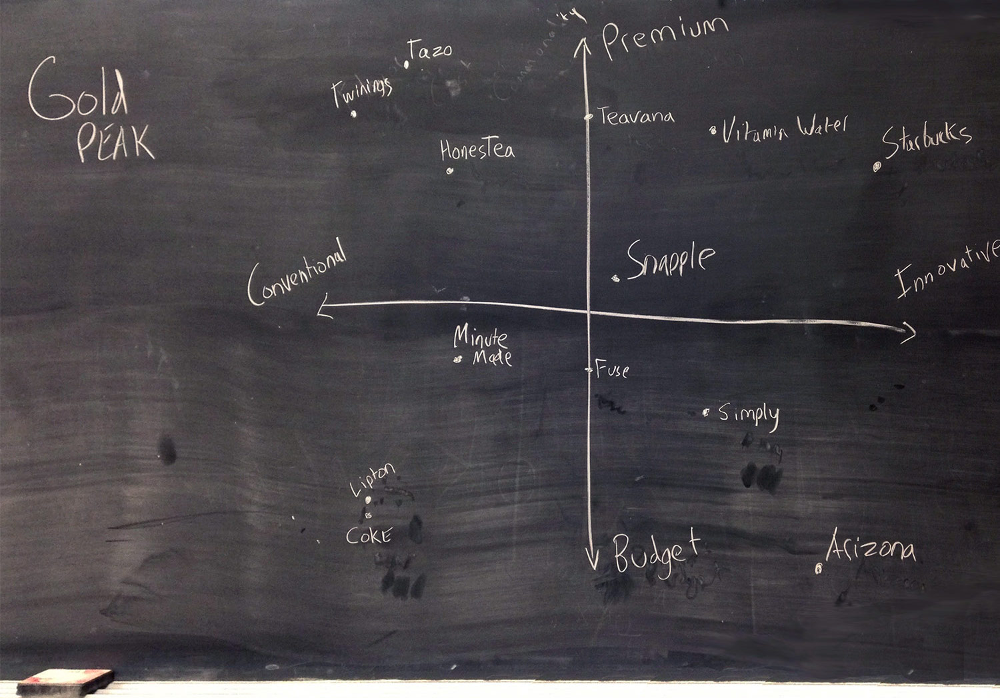
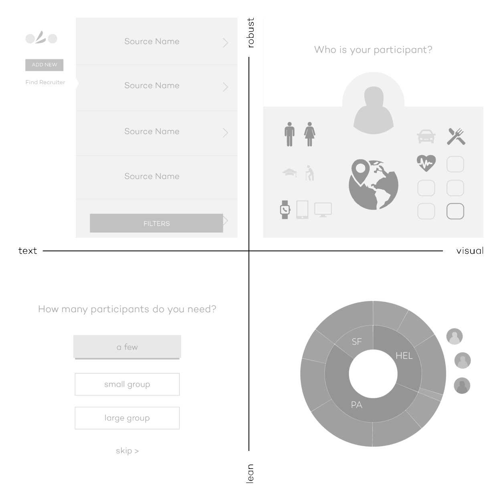
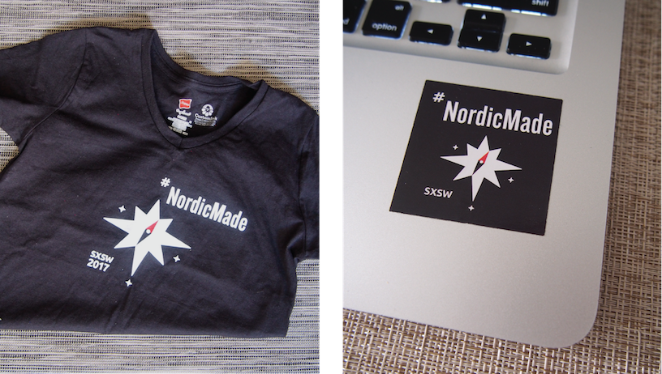

Bruin Advertising & Marketing Team, 2015–2016
Strategic Planning subcommittee
The ask: Create a marketing campaign for the following 2017 year to grow Snapple™ in the US, measured by brand relevance, purchase frequency, and 'top of mind' brand awareness. This was part of the official National Student Advertising Competition (NSAC) objective our Bruin AdTeam would tackle and ultimately present our comprehensive ad campaign for at the 2016 Southern California Regionals – and take home 2nd Place. Our Strategic Planning committee involved our entire team in the research process in order to deliver a campaign strategy from narratives we all came to understand.


AdTeam is divided into four subcommittees to reflect real roles within the marketing industry, and that can channel our expertise and allow efficient work in parallel for the tight NSAC timeline. AdTeam is an entirely student-run, passionate team of UCLA students from various academic majors and class years, some of whom joined as freshman and were now Account Directors leading our team with years of NSAC and marketing internship experience. I applied for the Strategic Planning subcommittee within AdTeam, eager to exercise my market research and problem solving passions. Our Strategic Planning subcommittee's goal was to create actionable insights about Snapple's consumers and competitive landscape, that the other subcommittees could then use to guide the creation and distribution of the comprehensive ad campaign we would present at NSAC 2016.


Team meetings were held twice a week—one subcommittee meeting with a specific research agenda, and one general meeting to present subcommittee findings to all of AdTeam and involve them in our validation activities. Strategic Planning began our subcommittee meetings by researching Snapple’s competitive landscape and brand history with online articles from a variety of social, news, and academic sources, something I had learned from my Anthropology and Communications classes at UCLA. To gauge current brand awareness and consumer habits, we sent online surverys across the US, making sure we reached some consumers from Snapple's heartland geographic.
We expanded on and validated our research findings by hosting user focus groups at UCLA and conducting street interviews in targeted consumer locations in the greater Los Angeles area. To conduct these research methods, our Strategic Planning subcommittee paired ourselves off with members from the other subcommittees, so that we could directly involve every AdTeam member in talking with consumers, placing faces and narratives to the research, and to spread to our teammates the skills and confidence involved in a hands-on research process.



When our research phase was complete, we finalized a competitive landscape, target personas, and an actionable strategy for Snapple that met the NSAC prompt's defined business and brand goals for Snapple. We fleshed out our consumer personas and provided clips and quotes from the consumer interviews our full team had participated in, so that our campaign insights would come from narratives we all came to understand. When we handed off our research deliverables to the other subcommmittees, we wanted to hand off an understanding of the consumers, to tell their story and have some personality to play with.
From then on, our Strategic Planning subcommittee's role became to ensure that the campaign decisions made by other subcommittees stayed relevant and effective at meeting the NSAC prompt, as well as making sure decisions were based off of our consumer and market research. It was important for our subcommittee to stay active in the general AdTeam meetings and vouch for our target consumers' narratives and campaign strategy as the creative execution and distribution of the campaign began to kick in.


Below: Excerpt from my application for AdTeam's Strategic Planning subcommittee. In addition to answering fun, creative marketing questions, part of the application was to provide comprehensive research to help a real company better reach consumers through their website. My research included scanning the internet for data and statistics about who uses Dulcolax and its competitors, as well as best practices for medical and sales interfaces and their landing pages. These revealed a target demographic and consumer habits, that the company could implement to convert specific users to purchase.
Online (rather than in-store) purchase is convenient for the working class target demographic of Dulcolax. The use of colloquial copy (rather than medical terms), as well as real quotes from the target demographic promote transparency and trust. The users know their symptoms, so an interactive, user-specific symptom chooser would allow the user to comfortably feel part of the prescription process. Another solution to explore would be to limit the amount of products the user is seeing at a time to only the most relevant, because the target user is likely either uneducated or indecisive when choosing a brand. A grid that reads horizontally could cater to Dulcolax's older user demographic. Other opportunities for the website are to feature coupons and include a community element. Dulcolax is expensive relative to its market, so a Coupons page pushes deals and affordability to low income users. A Community page is a way for users to learn more about the product and a reason to return to the site.


LA Hacks, 2016
Illustrator & co-Lead UX Designer
LA Hacks is UCLA's annual weekend-long hackathon with 1500 student participants and various company sponsors. I had the chance to work on a design team within the larger student-run team of organizers, many of whom had been part of LA Hacks through multiple years. LA Hacks 2016 organizers had the goal of drawing in a range of participants, from students new to coding, to skillful returning coders, to minorities such as non-coders and females. Participants would feel not only welcome but important to the hackathon experience, and integrated in a non-imposing way to experienced coders.

My co-Designer and I followed launches of other schools' hackathons as well as events targeted at minorities in the coding community, and paired this market research with participant feedback from LA Hacks 2015, to craft an identity, website, and goals for 2016. As the event weekend neared, we brought in two designers to focus on apparel, event space design and videography. Together we incorporated the event's goals and user research throughout the hackathon experience.
Participants' shirts had the diving coding bear, familiar from the website, and playful yet professional on a dark blue shirt. Us organizers wore a white, approachable shirt color with a bright pink bear character that stood out in the dark pavilion event space. Shirt backs had the mandatory list of event sponsors, to which I brought creative, relevant attention with company-inspired bear illustrations. On day one of hackathon weekend I helped hand out participant shirts at the pavilion doors and had the pleasure of seeing delighted faces as they recognized the bear. The event was off to a positive, inviting start.
We took advantage of having so many bear illustrations floating around and turned them into stickers, for participants to collect and trade at and after the event. From digital to physical brand recognition and participant interaction, my bear illustrations allowed room for diversity and various user types while communicating that personal human touch that is central to hackathons.

With every design decision, from the website down to the shirt colors, it was important for my co-Designer and I to allow our large team of LA Hacks organizers to learn about their participants and how our decisions help users perceive LA Hacks as inclusive and encouraging. We focused validation on event goals, target users, and best practices from our research and previous years' hackathons. These organizers would be advertising the event, so it was important for their messaging used on social media, on-campus recruiting, and website updates to reflect our goals.


My co-Designer and I worked alongside our two developers to communicate any timeline constraints and to iterate on new features side by side, as the website went from a splash page teasing the event, to a site with detailed information about the event, to a day-of Live section with quick links that could be saved to view offline (above).
I wanted to keep learning after event go-live when my traditional 'Designer' role was done, to see how our organizers had executed this year's values and inclusivity goals. I stayed for much of the weekend, embodying and wearing my organizer shirt with the inviting pink bear, walking around the event floor during project demos, and attending lectures by women and minorities in tech to hear participants' and lecturers perspectives.
After the event, my co-Designer and I worked on design documentation (below) for future LA Hacks team designers. The documentation highlights how UX/UI reflect event and user goals, as well as our learnings from working with the hackathon timeline, developers, large organizational team, and market research. Other members of our team would also reflect on LA Hacks 2016 success metrics and had a thoughtful open-minded attitude of what to improve for 2017.
We concluded from our research that the landing page design and copy should generate excitement and curiosity in users familiar with LA Hacks, while also being playful and engaging enough to get shared around to new users. These messages were emphasized in the landing page experience because digital users are converted into hackathon participants when they sign up through the site. We reached an identity of bright UI colors with reference to Los Angeles and UCLA, round approachable shapes, and animal mascots playing off of UCLA's 'Bruin bear' rather than people. The visual and written identity we had fostered should inspire inclusivity in the participants themselves. Ideation and initial design directions documented below.


Dogtown Media, 2016
UX/UI Designer
During my last year of classes at university, I made the time for myself to work as a full time designer at a professional UX agency in Los Angeles. At Dogtown Media, a fast-paced digital design and development agency based out of Santa Monica, I built my familiarity and confidence in the UX research and design process.
Although I started at Dogtown with a focus in creating wireframes, our team’s agile workflow and multiple ongoing client projects allowed me to step in to support my coworkers in various stages of client work. I learned the importance of workflow transparency—sharing project statuses during team standup meetings and scheduling time for feedback from my coworkers. At Dogtown I worked with our clients both one-on-one and with our team of Senior Researcher, three UI Designers, Developer, and Business leads in a collaborative, mentorship environment.
Below: My first one-on-one client work for LaHaV Learning. Our Senior Researcher kicked off the project, from where I then communicated expectations and next steps with the client and conducted research, wireframes, visual design and developer hand-off.

Each week at Dogtown we presented some kind of design deliverable to various client personalities. I learned that for clients who are startups themselves, it is important to clearly outline the design-to-launch process, introduce them to UX deliverables, and what is expected of all involved on the project.
During one particular project I worked with our Lead Researcher on market research, user interviews, user flow, and wireframes for Kirb – ‘The One-Tap Parking App’. We worked with Kirb Inc.’s founder to actualize his business goals and creative vision. When we presented our market opportunity findings and design directions, they were clearly validated with user interview quotes and competitor best practices. It was important to find MVP middle ground with Kirb’s passionate, ambitious startup CEO, in order to bring life to a mobile application together.
Research for Kirb included interviewing a handful of users from Kirb’s MVP target location (greater Los Angeles area). Phone interviews focused on everyday user habits and services used. In-person interviewees were presented with competitor apps and an early, clickable prototype on their own mobile device as I observed user hesitations and expectations.
Below: Stages of presenting research and designs to the client—from market research findings, to signing off on MVP features to determine project scope, to wireframes of a particular flow. We used this same approach when presenting research to our startup clients EMNTR and PepperJelly, both with a goal of launching a mobile application.


To allow Design and Development to work time-efficiently together on a project, I included back-end interactions on user flows. While we didn’t showcase these technical user flows (below) in our client presentations, they were important in determining our scope of work. User flows allowed us to plan the amount of screens, development considerations, and match user stories to possible actions in our planned flow.

We learned to keep UX and UI working simultaneously in order to keep a client actively involved and signing off on project phases. Rather than waiting for all wireframes to be completed to start the visual design process, we talked with the clients about their visions and market research and presented design directions. Our UI Designer would translate the approved style into a UI screen, and from there I could take the approved screen and apply the UI style to our complete set of wireframes.

Below: Visual directions I worked on for Spackle app, from an initial wireframe.
We encouraged our clients to first focus on MVP features and we then highlighted opportunities for future development and features. For one particular project in its second phase of design and development with Dogtown, I worked alongside our Senior Developer to implement a new feature in the existing App Store application HowFastWifi. This workflow was a condensed round of research, wireframing, and validation from our previous market research and current App Store reviews. I applied the existing app’s UI style to the new elements—a Settings screen and map icons.

I continued occasional remote work for Dogtown when my final quarter of university classes resumed in the spring and after graduation when I moved away from Los Angeles to New York.


Idean, 2014 & 2015
Interaction Designer, Intern
What's it like to be a UX designer at Idean? How about a Lead designer, or one newly hired? My first summer internship at Idean, in 2014, I was immersed in a client project as a design intern. I worked with and learned from our tight-knit team of PM, UX Design/Researcher, and Developer, from the project's initial ideation phase, to seeing the project through client collaboration and workshops, to UI directions. I developed a passion for the brainstorming and problem-solving side of design, and realized the scope of UX. When I interned at the company again in 2015, I took advantage of being around so many talented, experienced designers in an agency environment.
Below: Documentation of my final intern project that year. The task was to research, create, and validate any interface that can provide business value to the company. This company-specific solution, IdeanPort, is an internal repository tool for Idean's designers to find documentation of and learnings from fellow designers on previous client projects.
The idea came about from conducting market research of new internal industry tools and interviewing and ideating with Idean employees. This company has offices spread across the US and Finland, and designers tackling interesting market research and solving creative client problems every day. I interviewed Idean's designers to gain insight into their common practices and painpoints.

The new hire: Wants to familiarize themselves with existing company methods and resources without taking time away from other employees. Unfamiliar with Idean's presentation formatting and common user recruiting contacts.
The lead designer: Wants to document project insights, contacts, and important deliverables that might otherwise be forgotten or lost.
The junior designer: Wants to gather best practices and project insights from a variety of project types. With every new project, there is some time and guess-work involved as to which fellow designers to reach out to, who might have worked on a similar project.
Current methods of approaching these goals included employees personally reaching out to one another asking for leads, or clicking through extensive Google Drive folders of the company's entire project history. There was an opportunity to lessen employee time and clicks spent navigating to relevant information.
I explored the solution of a repository in four different directions: robust, lean, text, and visual. These interfaces were then validated with the target employees who would be using it.

The project culminated in a presentation to various team leads within Idean, stressing the potential business value of the tool.


Elffe at Summer of Startups, 2015
Designer
Once a year, Aaltoes entrepreneurship group from the Aalto University of Technology in Helsinki hosts the Summer of Startups, an accellerator program to which 15 small teams are chosen to develop their product or service during summer break from university, and learn alongside industry leaders and the startup community.
My cousin and his team of business and code developers recruited me as Designer and we began work over video calls, with myself at UCLA in California and my four teammates at Aalto University in Finland. These calls allowed us to align business goals with product and user research as we developed our service's name, identity, target audience and goals. I shortly joined my team in the Startup sauna workspace, where we continued to narrow our target audience, plan content and photography shoots, and design the landing page and build it together using Webflow.

Elffe activates senior citizens within their community through younger 'Elffe' helpers. Our team visited senior homes to gauge interest and build connections, while our website targeted the seniors' loved ones who would be ordering the service. Credibility on the website is achieved with quotes from all users involved: the senior service receiver, the young Elffe service provider, and the loved one ordering the service. The website's use of real rather than stock visual and textual narrative emphasizes authenticity and trust. All content is by Elffe, of Elffe. We also marked our young Elffe service providers with affiliations and seals of approval from within their community, such as university and scout badges.

Below: Initial logo directions I went through with our team, and our Summer of Startups communal workspace.


Elffe began picking up recognition and as we all parted ways to continue university, one of our teammates continued developing and narrowing the service and now runs it as Fiksari.

B.A. in Design Media Arts (DMA), 2012–2016
Graphic design, Typography, Illustration & Photography
Graphic design is a way for me to visually give the experience of a story, a feeling, a message. The Design Media Arts (DMA) program for me was four years of intensive studio classes brainstorming, creating, critiquing, during which I built a strong foundation in basics such as form, color, hierarchy, typography, and grew confident in my personality and style showing through my work. The classes were a balance of projects that relied on self-discipline and creativity, group critiques where we learned insights into one anothers' ways of thinking, and guidance from a talented professor in the field.


Interaction & Game design
I wanted to bring into my design world what I was being exposed to in my Sociology, Information Studies, and Writing analysis classes on campus. Interactive, physical mediums were a way for me to combine my parallel passions and create research-based projects with a message for people to experience.
I began by incorporating the user into my projects, thinking of how my design was being experienced and why. After an in-class exercise in HTML & CSS or a lesson of the fundamental rules of gameplay, I challenged myself to combine that with what I had been learning in my coinciding classes and my Interaction Design internship at design agency Idean.


Senior Project
My work at DMA culminated in my Senior Project installation piece, documented below. I juxtaposed video footage from my simple personal life that year, with shocking news footage my eyes and ears had been exposed to from classes and podcasts throughout the year. I felt the responsibility to use my skills in editing, interaction design, and research for a purpose—for exhibition visitors to visually experience with me this cognitive dissonance between personal vs environmental, societal responsibility that many students and young people today feel the pressure of.


Video & Animation
DMA allowed me to explore my background in video and editing, which I had been passionate about since directing my friends in middle school to then studio Film classes in high school. My talented DMA professors gave critique in terms of form, emotion, detail. We were challenged to create videos from a vague prompt such as 'Red', or 'Light & motion'. Below is a video where I was able to showcase my strong editing style, utilise my experience working with actors, and challenge my eye for detail.
I also learned a completely new skill: animation. A geometric shape can convey emotion, behavior, space. Animation allowed me to combine the storyboarding and editing elements of video with illustration. More of my video work and DMA animations on Vimeo.com/dorasofia.


More of my video work and DMA animations on Vimeo.com/dorasofia.

Vivgo, 2015
UX/UI & Brand Designer
During my third year at UCLA, I joined an ambitious project to tackle a problem my friend was noticing as a frequent traveler and non-US native living in Los Angeles—lack of access to local, authentic experiences. She had been working with her sister on a solution from their business and Communications perspective, and one day showed me a wireframe mockup of what the solution might look like. They recruited a developer and myself as designer to bring the project to its physical, mobile app form. We met once a week to share research and findings from each of our unique backgrounds (market research, entertainment, legal details, development contraints, design opportunities). We focused the scope of the app; we were not in the business of tourist attractions, and had to have a realistically populated app on-launch, from which we could later scale up. Our MVP target demographic was the foreign-exchange student community at UCLA. We began building our community, and our startup was ultimately put on hold when our team went our different ways after graduating.


Working with a developer side by side, I learned about handing off UI specifications and communicating userflow. We worked together to adapt my designs to our development timeline, by prioritising key features. We were able to work in parallel post-wireframes, with our developer building out a fleshed-out working app (above) while I focused on UI styling (below).


#NordicMade SXSW, 2017
Graphic Designer
I've been quite involved in the Finnish startup and networking community, from working various tradeshow floors with VividWorks AR to actively attending events hosted by Aaltoes and Start North. Nordic Made is a group of various Nordic startup companies and community leaders. Designing the promotional materials for Nordic Made at SXSW 2017 was not only great visibility but a way I could contribute a strong, mindful visual identity to this community I care about.
To begin, I familiarized myself with the Nordic Made brand. Although the group had limited visual presence, apart from their existing logo, they had a strong news presence, cultural themes, and community of people involved. It was important to design the visuals and copy to reflect an innovative and Nordic message, not isolating any one country or company, while also considering the lively SXSW tradeshow context. Playing off of Nordic Made’s limited visual presence also allowed me to play around with the mystery and enticement for a new SXSW audience into the Nordic culture.


Designing for various mediums and contexts meant designing flexible visuals and content hierarchy systems. Detailed designs had to translate into simpler versions and vice versa, such as for shirt printing constraints and to maximize visibility on a small scale or from far away.




Because of the live element of SXSW, presentation content would be decided day-of. Elements such as event names, times and locations, and companies involved might change, so it was important to hand off templates to the Nordic Made team to update themselves. These 'Master' slides were filled in with desired images, copy, and partner logos while staying on-brand and uncluttered. Partner companies could easily associate themselves with Nordic Made credibility at the booth and "engage with passerbys" successfully.

About me
As a designer I exercise my unique perspective. I have lived and worked in various cultures and environments throughout California, New York, and Finland. I fill in the gaps in my perspective by looking for and listening to stories from people I have yet to encounter. I continue to develop my open-minded perspective, aware that answers and patterns will reveal themselves when one looks and listens closely.
Mindful research gives me the power to understand the people and industries around me. Inclusive design is a way for me to advocate for the users.
Contact: ddorasofia@gmail.com
Skills
Design: Sketch, Invision, Photoshop, Illustrator, Image optimisation, Static & animated ad banners, HTML and CSS (familiar)
UX: Market research, User and consumer habit interviews, User flows, User stories, Client presentations
Video: Premiere, Storyboarding, After Effects (familiar)
Languages: English, Finnish, Spanish (familiar)
Experience
Designer
Luxus Worldwide (2017–current, Helsinki & New York)
At Luxus we work directly with our client, a large consumer electronics company, to produce marketing materials and maintain a consumer-facing website. I coordinate with our several Luxus PMs, copywriter, and developers to create campaign pages, email announcements, market localisations to the website, and static and animated ad banners. I advocate for diverse representation in our designs’ lifestyle imagery, for text readability, and increased flexibility from a CMS standpoint. I work with our developers to optimise assets for website load time, and to support Arabic right-to-left website and ad banner layouts. We work within our client's branding and co-branding guidelines to turn local market requests into designs that meet the client’s global, corporate approval process and timelines.
UX/UI Designer
Perpetual Solutions (2016, New York)
At Perpetual I was able to take on entire phases of client work, and I worked with our other designer for any hand-overs and client coordination. My main project was for a large media corporation client, rethinking their existing internal employee tool. I conducted research and recorded user interviews at the client’s corporate office in Times Square, listening for user pain points and task goals. I later tested the MVP prototype with employees. I was able to advocate for the internal tool to use familiar terms and shift away from its initial technical-heavy focus.
Dogtown Media (2016, Los Angeles)
At Dogtown I worked with our long list of clients both one-on-one and with our team of Senior Researcher, UI Designers, Developer, and Business leads in a collaborative, mentorship environment. My role included market and user insights, user flows, wireframing for mobile apps and web, user interviews, UI directions and application, and developer hand-off. We frequently presented research and design deliverables to clients. I learned that for clients who are startups themselves, it is important to clearly outline the design-to-launch process and scope of work. We introduced clients to UX deliverables, what was expected of us all involved on the project, and validated research and designs with user quotes and market best practices.
Idean (2014 & 2015, Palo Alto)
During my first summer as Interaction Design Intern, I was immersed in a client project, ideating alongside our tight-knit team of PM, UX Designer, Developer, and client. When I returned the following summer I had a solo project to create any interface that could provide business value to Idean. I interviewed Idean's designers to gain insight into their common practices and painpoints, and found an opportunity to lessen employee time and clicks spent navigating to relevant information.
Strategic Planner & Researcher
Bruin Advertising & Marketing Team (2015-2016, UCLA)
2nd Place at the National Student Advertising Competition (NSAC) 2016 Southern California Regionals
At this student-run advertising agency we had the task of creating a marketing campaign for the following 2017 year to grow Snapple™ in the US, measured by brand relevance, purchase frequency, and brand awareness. On the Strategic Planning subcommittee we researched actionable insights about our consumers, competitive landscape, and brand history. We hosted user focus groups and targeted street interviews, and directly involved Ad Team’s other subcommittees in the process. This allowed us to create a campaign strategy from narratives we all came to understand.
Freelance Designer
#NordicMade at SXSW (2017)
Designing the promotional materials for Nordic Made at SXSW 2017. I worked with their existing logo and research of cultural messaging to create a strong, mindful visual identity. It was important for the designs to reflect innovation, not isolate any one Nordic country or company, and to fit the lively SXSW tradeshow context.
LA Hacks 2016 (2015-2016, UCLA)
Co-Designing the annual UCLA LA Hacks hackathon website and branding to create an event experience that focuses on inclusivity, learning, and community.
Elffe at Summer of Startups (2015, Aalto University)
Working alongside business and code developers as Designer on the Elffe Team, creating a website and brand identity that convey the company values of community engagement and credibility.
Vivgo (2014-2015, Los Angeles)
Lead experience and visual designer at a social travel startup, creating a mobile application and brand image from concept, to user interviews, UX/UI design, to MVP user group testing.
Undergraduate Research Journal of Psychology (2014, UCLA)
Helping launch this UC Berkeley-based research publication at UCLA by working from their mission statement and vision to create approachable cover art and article layout for Volume 1: Spring 2014.
VividWorks at Dwell On Design Expo and WestEdge Design Fair (2012-2015, Los Angeles)
Working alongside the VividWorks CEO and technical team at various design tradeshows once every year to demonstrate their 3D augmented-reality software to potential business partners and consumers.
The Cooking Tree (2011-2012, Los Altos)
Working in all aspects of video production including lighting set up, audio, and video editing for a cooking show channel on YouTube. My final project was full control of hiring, directing, filming, and editing an episode for the channel.
Assistant Teacher
Finnish Language School of Silicon Valley (2008-2012, Sunnyvale)
After graduating myself, I returned to assist a class of elementary-aged students. I encouraged Finnish language and communication skills through interactive class activity and homework review.
Education
University of California, Los Angeles
BA in Design Media Arts & Minor in Digital Humanities (2012-2016)
In the study of Design Media Arts I developed my visual style and focus on message, using these to explore new interfaces such as interactive video installation, print layout and bookmaking, and digital and physical game design.
I also completed a Minor in Digital Humanities and incorporated behavioral, research based learning from courses in Anthropology, Sociology, and Information Studies.
Freestyle Academy of Communication Arts and Technology
Interactive studio classes in Film Production, English, and Graphic Design (2010-2012)
I co-produced, cast, directed, and edited a Narrative film that was selected and shown at our end of year student showcase for the community.